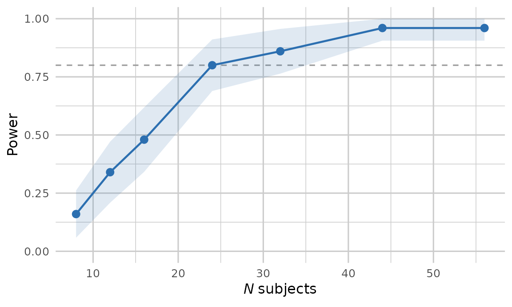

Simulation-based power addresses how often an analysis would detect an effect if the world matched the specification exactly. pilotr estimates this by repeatedly simulating from the ground-truth specification, fitting the analysis model and recording the proportion of significant results. Beyond power, it reports the design-analysis quantities of Gelman and Carlin (2014), namely the Type S (sign) error and the Type M (magnitude, or exaggeration) ratio.
The mixed-effects examples below use small
n_sims, and their results were precomputed with exactly the code shown and shipped with the package, so that the vignette builds quickly. For real planning, we recommendn_sims >= 200, with more replicates for stable Type S and Type M estimates.
Two-group Gaussian
The classic case has a closed-form analytic power, which the simulation matches.
spec <- build_spec(list(
name = "two_group", seed = 1, design_kind = "between", n_subject = 64,
factor_name = "group", lev1 = "control", lev2 = "treatment",
intercept = 100, effect = 5, family = "gaussian", resp_name = "score", sigma = 10))
pw <- power_design(spec, n_sims = 500)
unlist(pw[c("power", "type_s", "type_m", "true_effect", "mean_estimate")])
#> power type_s type_m true_effect mean_estimate
#> 0.504000 0.000000 1.372571 5.000000 4.947259At roughly 50% power, the Type M ratio is well above 1. Conditional on significance, the estimated effect is exaggerated, even though the average estimate over all replicates is unbiased. This reflects the statistical-significance filter, which is precisely what design analysis is meant to expose.
Crossed mixed-effects designs
A feature that distinguishes pilotr from a marginal simulator is
power estimation for crossed by-subject and by-item designs. The R
interface fits the maximal model
y ~ cond + (1 + cond | subject) + (1 + cond | item) with
lme4/lmerTest and tests the fixed effect with
Satterthwaite degrees of freedom.
spec_c <- build_spec(list(
name = "priming", seed = 1, design_kind = "within", include_items = TRUE,
n_subject = 24, n_item = 18,
factor_name = "condition", lev1 = "related", lev2 = "unrelated",
intercept = 6, effect = 0.06,
subj_int_sd = 0.12, subj_slope_sd = 0.04, subj_corr = 0.2,
item_int_sd = 0.08, item_slope_sd = 0.02, item_corr = -0.1,
family = "shifted_lognormal", resp_name = "RT", sigma = 0.3, shift = 200))
pm <- power_mixed(spec_c, n_sims = 20) # tiny for the vignette; use >= 200 in practice
unlist(pm[c("power", "type_s", "type_m", "n_converged")])#> power type_s type_m n_converged
#> 0.800000 0.000000 1.193659 20.000000n_converged reports how many replicates the maximal
model actually fit. This is a useful diagnostic in its own right, since
convergence problems are common in small crossed designs, and it is the
denominator of power, which is the significant proportion
among the converged replicates.
power_mixed() runs pilotr’s own simulation loop over the
portable specification rather than wrapping an existing power package.
It covers territory pioneered by simr (Green and
MacLeod, 2016) and mixedpower (Kumle,
Vo and Draschkow, 2021). pilotr differs in being driven by the
cross-language specification, in reporting Type S and Type M errors
alongside power, and in built-in parallelisation.
A power curve
The following sweep over the number of subjects shows where power crosses a target.
curve <- power_curve_mixed(spec_c, subject_ns = c(8, 12, 16, 24, 32, 44, 56), n_sims = 50)
curve#> n_subject power type_m n_converged
#> 1 8 0.16 1.998682 50
#> 2 12 0.34 1.639186 50
#> 3 16 0.48 1.404611 50
#> 4 24 0.80 1.189207 50
#> 5 32 0.86 1.129062 50
#> 6 44 0.96 1.046713 50
#> 7 56 0.96 1.048449 50
# The transparent device canvas is what lets the page colour through: a ggplot theme alone
# cannot do it, since the device paints white underneath. The website's dark mode then
# inverts the figure's ink, so the axes and labels follow the theme instead of sitting on
# an opaque matte.
library(ggplot2)
# Each power estimate is a proportion over the converged replicates, so it carries a
# binomial Monte Carlo standard error. The shaded band is the 95% interval.
curve$se <- sqrt(curve$power * (1 - curve$power) / curve$n_converged)
ggplot(curve, aes(n_subject, power)) +
geom_hline(yintercept = 0.8, linetype = 2, colour = "grey60") +
geom_ribbon(aes(ymin = pmax(0, power - 1.96 * se), ymax = pmin(1, power + 1.96 * se)),
alpha = .15, fill = "#2C6FB0") +
geom_line(colour = "#2C6FB0", linewidth = 0.8) +
geom_point(colour = "#2C6FB0", size = 2.6) +
scale_y_continuous(limits = c(0, 1)) +
labs(x = expression(italic(N) ~ "subjects"), y = "Power") +
theme_minimal(base_size = 12) +
# theme_minimal still paints a white plot.background over the transparent canvas, so
# both surfaces have to be cleared for the page colour to reach the figure. The ink is
# left at its default: the website inverts the figure in dark mode, which turns the dark
# axis text light, whereas a fixed mid-grey would be inverted into a muddy tan.
theme(plot.background = element_rect(fill = NA, colour = NA),
panel.background = element_rect(fill = NA, colour = NA),
panel.grid = element_line(colour = "grey80"))
The shaded band shows the Monte Carlo interval, the binomial standard error of each power estimate over its converged replicates widened to a 95% envelope.
Parallel execution
Every power and precision analysis in pilotr takes a
workers argument that spreads the Monte Carlo replicates
across local cores. Each replicate seeds the shared cross-language RNG
from its own index, so the results are identical to a serial run
whatever the worker count, and parallelisation costs nothing in
reproducibility. The mixed-model fits dominate the running time, which
makes the speed-up close to linear in the number of cores. In a sweep
the worker pool is created once and reused across all sample sizes.
power_curve_mixed(spec_c, subject_ns = seq(20, 60, 10), n_sims = 500, workers = 8)This design answers a serial bottleneck familiar from
simr::powerCurve(), which this package’s maintainer
previously worked around by splitting the sample-size grid across
separate jobs by hand and recombining the results afterwards (Bernabeu,
2021). In pilotr the same gain takes one argument.
A bridge to the Bayesian workflow
For a confirmatory Bayesian fit, brms_bridge() emits a
ready-to-run brms model. It provides the family, the fixed
and random-effects formula, and a weakly-informative prior set, all
derived from the same specification, so that the planning model and the
confirmatory model remain consistent.
brms_bridge(spec_c)
library(brms)
fit <- brm(
RT ~ effect + (1 + effect | subject) + (1 + effect | item),
data = your_data,
family = shifted_lognormal(),
prior = c(
prior(normal(0, 2.5), class = "Intercept"),
prior(normal(0, 0.5), class = "b", coef = "effect"),
prior(normal(0, 1), class = "sd"),
prior(lkj(2), class = "cor")
),
chains = 4, iter = 4000, warmup = 2000, cores = 4,
control = list(adapt_delta = 0.95)
) See also
The precision / ROPE vignette covers design analysis when the question concerns practical significance instead of statistical significance.